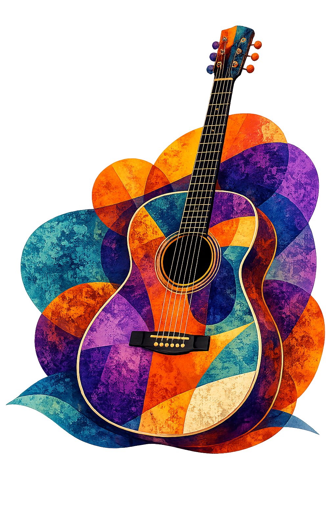
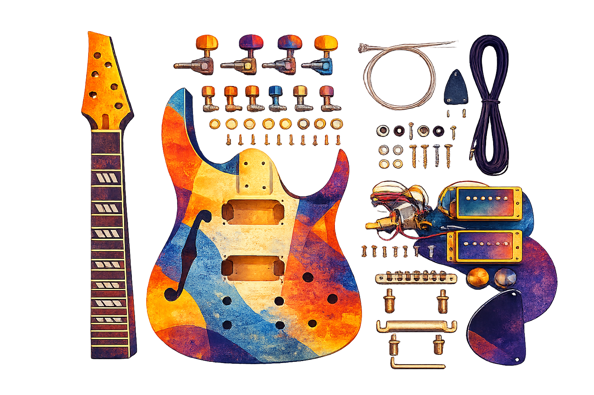
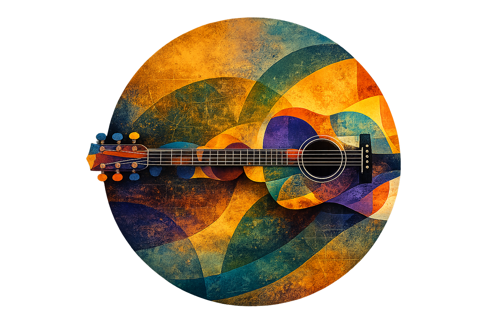
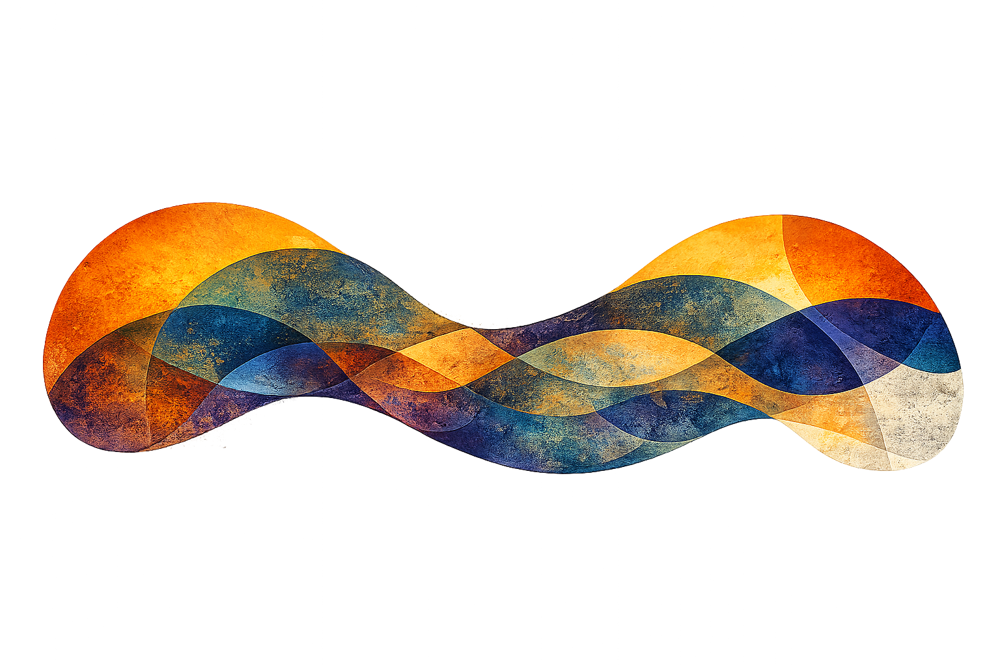

Verde principal
#083D39Fondos · Navbar · Cards
Design system
Todo el lenguaje visual que define la identidad de Trastes. Desde la tipografía hasta los componentes interactivos utilizados para construir esta experiencia.
01 · Fundamentos
Una paleta de alto contraste inspirada en el taller: profundidad, materia, energía y precisión.
#083D39Fondos · Navbar · Cards
#FF4E17CTAs · Hover · Highlights
#F5EBDDTítulos · Fondos claros
#2D6DFFBotones secundarios · Acentos
02 · Fundamentos
Una voz display contundente se combina con una tipografía de lectura neutral y precisa.
La precisión nace de comprender cada etapa del proceso.
Materiales honestos, herramientas reales y práctica constante.
Construí el instrumento que soñaste.
03 · Componentes
Acciones claras, contrastadas y con una respuesta breve que confirma la interacción.
04 · Componentes
Contenedores reales del proyecto adaptados a distintas jerarquías y densidades de información.

Proceso completo, recursos y acompañamiento profesional.
Una ventaja concreta presentada con número, título y una descripción breve.
Aplicá cada herramienta en tu propio instrumento.
Sujeción precisa para encolados y armado estructural.

Preparación de superficie, sellado, capas de terminación y pulido final para proteger el instrumento y revelar el carácter de la madera.
05 · Recursos
Trazos simples, legibles y consistentes que acompañan la información sin competir con ella.
06 · Layout
Una estructura flexible mantiene la alineación del contenido y permite composiciones editoriales amplias.
07 · Superficies
Radios progresivos suavizan el lenguaje técnico sin perder precisión.
08 · Superficies
Profundidad controlada para separar niveles, enfatizar estados y sostener el contraste.
09 · Lenguaje editorial
Recursos originales que conectan oficio, experimentación y una estética artesanal contemporánea.



10 · Lenguaje editorial
Capas gráficas que aportan materia, recorrido y profundidad a las composiciones.

Formas orgánicas decorativas
Formas orgánicas decorativas11 · Comportamiento
Patrones reales, simples y enfocados. Todos los ejemplos funcionan sin utilizar imágenes.
Maderas, espesores y criterios para comenzar el proyecto.
Procesos estructurales organizados paso a paso.
Protección, pulido y terminación final del instrumento.
12 · Adaptabilidad
La jerarquía, el ritmo y la legibilidad se conservan mientras el sistema cambia de escala.